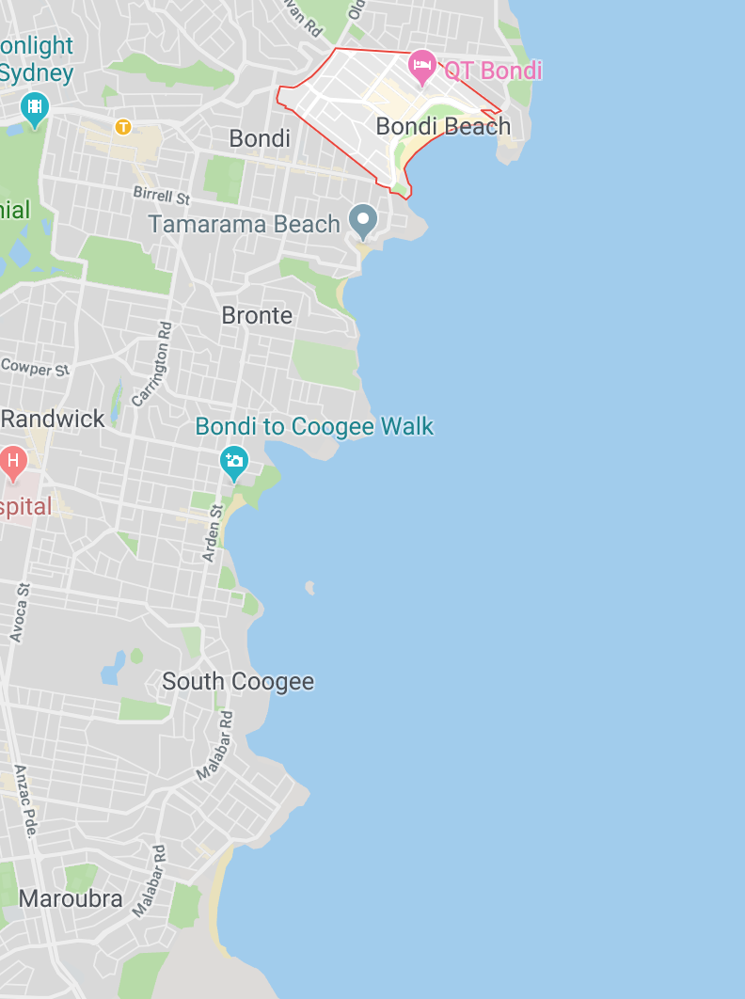
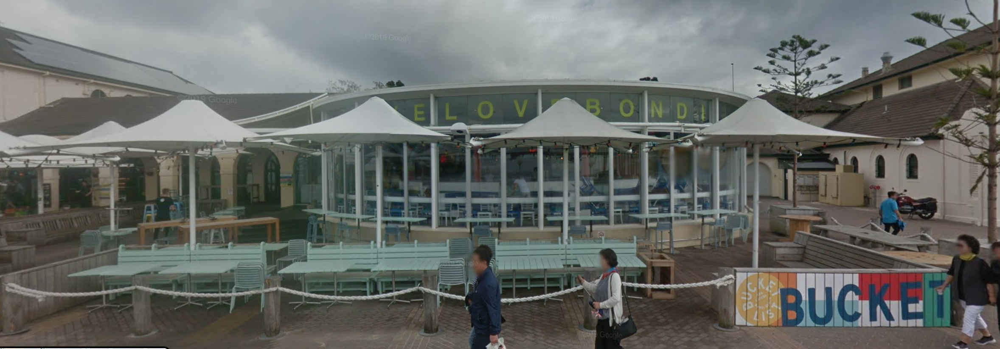

Bondi to Coogee
A cliff top coastal walk, the Bondi to Coogee walk extends for six km in Sydney’s eastern suburbs. The walk features stunning views, beaches, parks, cliffs, bays and rock pools. The beaches and parks offer a place to rest, swim or a chance to eat at one of the cafes, hotels, restaurants or takeaways. Most beaches offer picnic shelters, play areas, kiosks, toilets and change-rooms, Tamarama, Bronte, Coogee and Maroubra have free electric barbecues. The Bondi to Coogee coastal walk is a medium grade urban walk but there are some steep gradient paths and several staircases along the track. There are rest stops with great views and seating along the coast. It takes about two hours to complete the Bondi to Coogee Beach section of the walk and another hour and a half if you choose to continue to Maroubra. Although an urban walk the Bondi to Coogee walk is open to the elements, please make sure you wear comfy shoes, bring a hat, sunglasses, sun screen, water and in colder weather wear appropriate clothing.
BONDI
Bondi Icebergs

Campbell Parade

Bondi Pavillion

Bucket List
BRONTE


CLOVELLY


COOGEE
Coogee Pavilion is a large and happening place, located right off Coogee Beach, south of Bondi. Not only does it have a rooftop with four different bars and a huge wrap-around balcony, but also a great downstairs restaurant. While the downstairs of 'the Pav' is a very family friendly venue, complete with giant magnetic scrabble, ping pong and an in-house theatrette, the upstairs rooftop is an adults only zone. And from the spectacular Coogee Pavilion rooftop bar in Sydney you get a magical view of the Australian coastline and the nearby surroundings. One of the best coastal views from a rooftop bar in all of Australia, according to many.

The rooftop terrace comes with a very modern, lush and ocean-vibe setting with bright colors and lots of different places to settle down. Here you can enjoy great food inspired by the Eastern Mediterranean, a large selection of beer and wines along with excotic and fresh cocktails. A great place for relaxing ocean side drinks and bites anytime of the day.